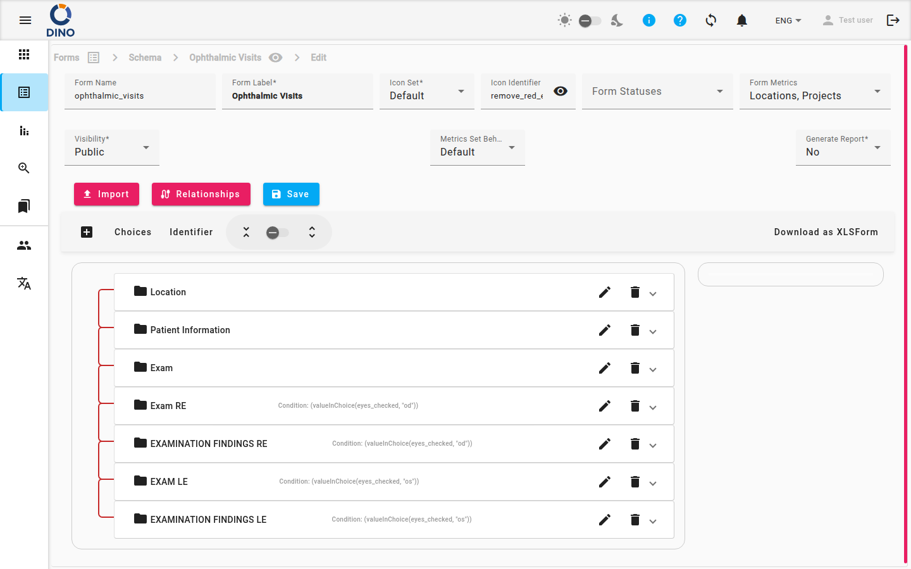
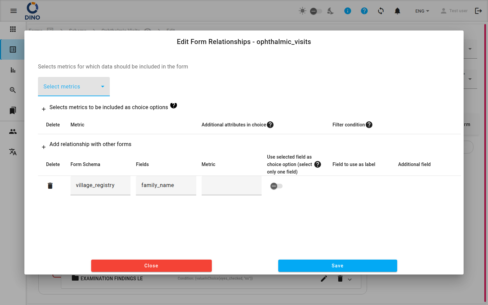

Editar form schema
La página Editar form schema te permite crear un nuevo form schema o modificar uno existente. Aquí defines los atributos básicos del form, gestionas sus estados y métricas, controlas la visibilidad y vinculas el schema a otros forms mediante relaciones.
Puedes acceder a esta página de las siguientes maneras:
- Haciendo clic en Create en la Forms overview para crear un nuevo schema.
- Seleccionando Edit en la tarjeta de un schema existente o desde su vista de detalle.
El percorso di navigazione en la parte superior muestra tu posición actual (p. ej., Forms > My Survey > Edit).

Atributos del form
Completa o ajusta los siguientes campos:
| Campo | Descripción |
|---|---|
| Form Name | Un identificador único del sistema (p. ej., survey_2025). Dino avisa si el nombre ya está en uso. |
| Form Label | El nombre legible para las personas que se muestra en las listas y los report. |
| Icon Set | Elige Default (iconos material) o Humanitarian (iconos SVG personalizados). |
| Icon Identifier | Selecciona un icono de la lista de autocompletado. La vista previa se actualiza en tiempo real. |
| Form Statuses | Una o más etiquetas que describen el estado de unos datos (p. ej., Borrador, Aprobado, Rechazado). Selecciona estados existentes o Create new Status para añadir uno sobre la marcha. Es posible asociar un nivel a cada estado, para establecer un orden entre los estados. Cuando se crean nuevos datos de un form, los datos se crean con el estado correspondiente al nivel más bajo. |
| Form Metrics | Métricas que se recopilan para cada conjunto de datos. Selecciona una o más de la lista. |
| Visibility | Private – el form schema solo puede aceptar datos de usuarios de DINO, siempre que tengan permiso para enviar datos a ese form schema en particular. Por otro lado, si un form está configurado como Public – cualquiera con el enlace puede enviar. Consulta la página sobre public forms para más detalles. |
| Metrics Set Behavior | Default – cada valor de métrica puede aparecer varias veces en los datos. Unique – un valor de métrica (p. ej., el nombre de un distrito) solo puede usarse una vez por form. |
| Generate Report | Cuando está en Yes, Dino genera un report automáticamente. Esta opción se oculta si ya existe un auto‑report. Consulta la sección auto report para más detalles. |
Unique Metrics Set Behavior
Usa Unique con cuidado — una vez que un valor se usa para una métrica, no puede reutilizarse en otros datos del mismo form schema.
Gestionar los Form Statuses
- Haz clic en el campo Form Statuses para expandir la lista.
- Para añadir un estado existente, marca su casilla.
- Para crear un nuevo estado, haz clic en Create new Status. Se abre un diálogo donde puedes introducir una etiqueta, elegir un color y guardar.
- Para editar un estado existente, haz clic en el icono edit (lápiz) junto a él.
- Haz clic fuera del desplegable para cerrarlo.
Definir relaciones
Las relaciones te permiten vincular campos entre distintos form schemas (p. ej., un sub‑form que depende de una elección en el form principal).
- Haz clic en el botón Relationships.
- En el diálogo, añade, edita o elimina conexiones entre schemas.

Las relaciones solo están disponibles al editar un schema existente, no durante la creación inicial.
Guardar e importar
- Save – guarda todos los cambios. El botón se desactiva si el form no es válido o si todavía se está guardando.
- Import – abre un selector de archivos para cargar un form schema desde un archivo JSON o CSV. Úsalo para reutilizar la estructura de un schema de otro proyecto.
El Form Builder
Debajo de los atributos, el área Form Builder te permite arrastrar, soltar y configurar campos individuales (preguntas, secciones, etc.). Los cambios se reflejan inmediatamente en la vista previa situada a la derecha del builder.